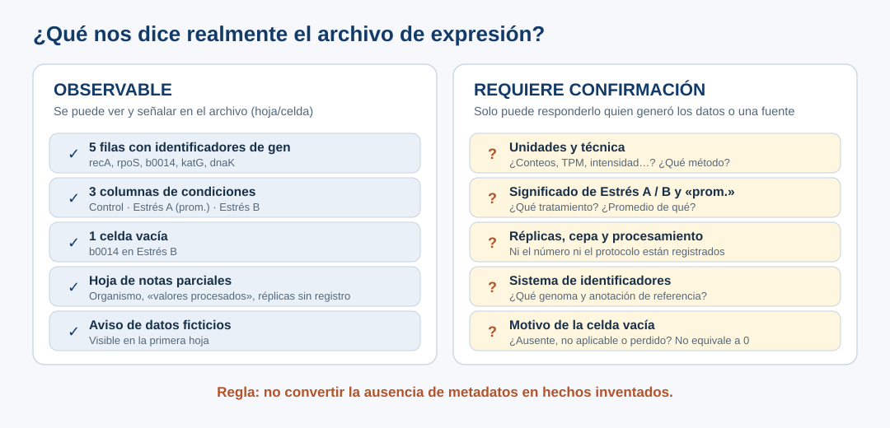

Caso de estudio: un Excel que debe «seguir FAIR»
Antes o durante el taller
- Una investigadora debe preparar un Excel de expresión génica «siguiendo FAIR», pero faltan datos de contexto.
- Antes de pedir ayuda a la IA, mira el archivo por tu cuenta y anota lo que no puedes saber con él.
- El producto es un diagnóstico de lo que falta saber sobre unidades, condiciones, réplicas y la celda vacía.
El encargo
Ya conoces este archivo: en el ejemplo 3 una IA le inventaba metadatos, y en Del problema al prompt sirvió para comparar dos solicitudes. Ahora lo trabajas tú.
Una investigadora prepara un artículo y recibe esta solicitud:
Los datos de expresión génica deben seguir los principios FAIR.
Tiene una tabla pequeña con cinco filas de genes y tres columnas de condiciones, pero le faltan datos esenciales de contexto experimental.
«Seguir FAIR» suena a una sola tarea, pero no lo es. Antes de empezar conviene preguntarse:
- ¿Qué significa, en concreto, que estos datos «sigan FAIR»? Lo vemos más abajo, aplicado al archivo.
- ¿Quién lo pide y qué espera recibir: un depósito en un repositorio, una tabla documentada, una declaración de disponibilidad de datos?
- ¿Qué se puede hacer con la información que ya hay y qué depende de otras personas?
La tarea no es fabricar metadatos para completar la tabla. Es reconocer qué información está disponible, cuál falta y quién podría confirmarla.
Los datos: qué dice y qué no dice el archivo
Descarga el Excel simulado. Tiene dos hojas: los datos y unas notas experimentales parciales. Una nota visible indica que los datos son ficticios. Si tu asistente no acepta archivos, usa la versión en texto.
![Vista de las dos hojas del Excel. Hoja 1, Expresion_genica: título, nota de datos ficticios y una tabla con columnas Gen, Control, Estrés A (prom.) y Estrés B para recA 125, 310, 180; rpoS 85, 245, 290; b0014 200, 420 y celda vacía; katG 45, 170, 115; dnaK 190, 390, 375. Hoja 2, Notas_experimento: nota suelta, datos del experimento de marzo; organismo, E. coli sin cepa confirmada; proceso, valores procesados; condiciones, Control, Estrés A, Estrés B; réplicas, sin registro en este archivo; responsable, por confirmar.](../recursos/vista-excel.svg)
Antes de seguir leyendo, mira el archivo por tu cuenta, en Excel o en el Explorador FAIR, que muestra las dos hojas en el navegador. Anota tres cosas que no puedes saber solo con este archivo. Después abre la caja y compara. Guarda tu lista: en la práctica la contrastarás con lo que diga la IA.
| Elemento | Pregunta que debes hacerte |
|---|---|
Cinco identificadores: recA, rpoS, b0014, katG, dnaK |
¿Qué referencia genómica o sistema de identificadores se utilizó? |
Control, Estrés A (prom.), Estrés B |
¿Qué tratamientos representan? ¿Qué significa prom.? |
Una celda vacía en Estrés B para b0014 |
¿Es dato ausente, no aplicable o perdido? Nunca interpretarlo automáticamente como 0. |
| Valores numéricos sin unidad confirmada | ¿Qué miden, en qué unidades y bajo qué procedimiento? |
| Notas que dicen «valores procesados» | ¿Qué procesamiento se realizó y dónde está registrado? |
| Organismo «E. coli (sin cepa confirmada)» | ¿Qué cepa y qué genoma de referencia corresponden a los datos? |
| «Datos del experimento de marzo» y responsable «por confirmar» | ¿De qué año son y quién puede confirmar la información? |
Sobre la identidad génica. En la anotación de E. coli K-12, b0014 es el identificador de locus de dnaK. La tabla tiene los dos, con valores distintos (200 y 190 en Control). ¿Es el mismo gen medido dos veces, o dos genes en otra anotación? Sin la cepa y la referencia genómica, el archivo no permite saberlo: una coincidencia sugerente no es una comprobación documental.

Qué pide FAIR, aplicado a este archivo
FAIR es el vocabulario clave del encargo. Lo que sigue es una descripción breve para orientarte: en la práctica guiada, con P1, le pedirás a la IA que te explique con más detalle los conceptos que necesitas, y podrás contrastar su explicación con esta. En otras sesiones del programa FAIR se estudia a fondo; aquí lo aplicamos a un caso concreto.
Qué es. FAIR son cuatro principios para que los datos científicos sean Findable (localizables), Accessible (accesibles), Interoperable (interoperables) y Reusable (reutilizables). Wilkinson et al. (2016) [R5] los propusieron pensando en las personas y también en los programas: que una computadora pueda encontrar y usar los datos con poca intervención humana.
Por qué se pide. Revistas y agencias de financiamiento piden cada vez más que los datos de una publicación se compartan siguiendo estos principios, para que otras personas puedan comprobar los resultados o reutilizar los datos.
Qué se espera de un archivo. En la práctica, que otra persona, sin preguntarle nada a la investigadora, pueda encontrar los datos, obtenerlos, entender qué significa cada columna y saber en qué condiciones puede reutilizarlos. FAIR no es un sí o un no: un conjunto de datos puede ser más o menos FAIR, y ningún formato por sí solo lo garantiza.
Las cuatro letras se pueden leer como cuatro preguntas:
| Principio | Pregunta | En este Excel |
|---|---|---|
| F — Findable (localizable) | ¿Cómo encontraría y citaría alguien estos datos? | Es un archivo suelto, sin identificador ni descripción que permita encontrarlo o citarlo. |
| A — Accessible (accesible) | Una vez encontrados, ¿cómo se obtienen y quién puede consultarlos? | No se indica dónde se depositará ni quién podrá consultarlo. |
| I — Interoperable (interoperable) | ¿Otras personas y programas pueden interpretar los identificadores, los términos y las columnas? | b0014 y dnaK podrían usar sistemas distintos; «Estrés A» y «prom.» no tienen definición. |
| R — Reusable (reutilizable) | ¿Se sabe lo suficiente sobre su origen, el método y la licencia para volver a usarlos? | Faltan unidades, réplicas, procesamiento documentado y licencia. |
Aquí usamos FAIR para ordenar lo que falta, no para declarar que el archivo cumple. Convertir el Excel a CSV o añadirle un archivo README no lo vuelve FAIR por sí solo: lo que importa es que contengan la información que falta. Y esa información, como los tratamientos o las réplicas, solo puede darla quien hizo el experimento; ninguna fuente externa, ni la IA, puede reconstruirla.
Qué vas a producir
La sesión cierra con dos productos:
- Un diagnóstico elaborado en tu asistente, limitado a cuatro asuntos: las unidades de los valores, la definición de las condiciones, las réplicas y la celda vacía. Incluye tres preguntas prioritarias para la persona responsable del experimento.
- Tu Bitácora mínima 4D, un archivo Markdown que completas paso a paso durante la práctica, donde registras también la comprobación con una fuente primaria que harás tú.
Los identificadores, el procesamiento, la cepa y la persona responsable quedan fuera del alcance del diagnóstico por el tiempo de la práctica, no porque sean menos importantes. Regístralos como exclusiones en la bitácora.
Cómo se trabaja
En la práctica guiada recorrerás las seis etapas del método con la IA, en un solo chat, y ejercitarás las cuatro competencias 4D. La práctica incluye la verificación con una fuente primaria y termina con tu Bitácora mínima 4D. Lleva contigo la lista que anotaste.